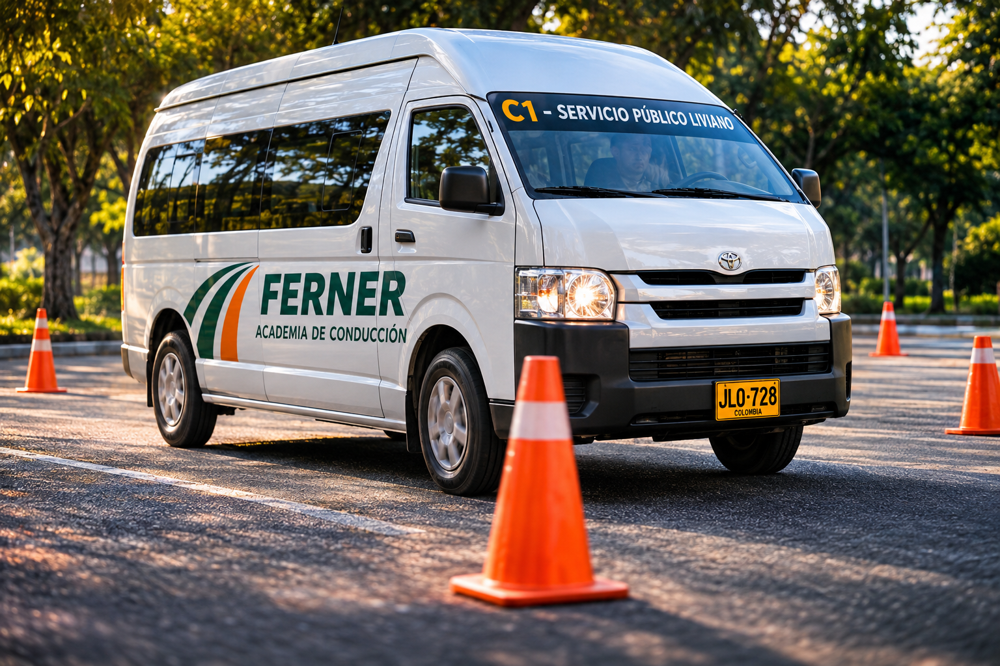
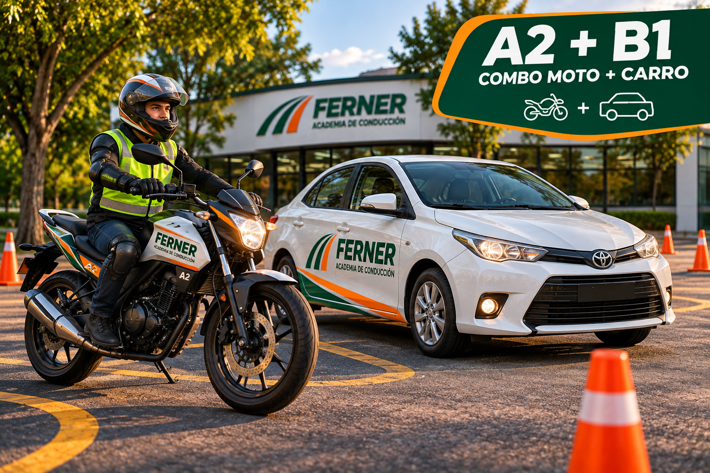
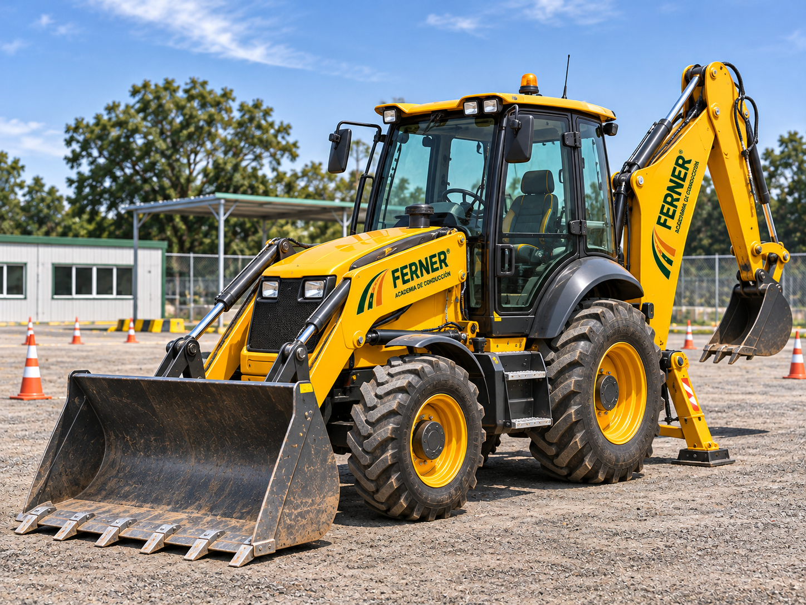

A2
A2
Motocicleta
Conduce motos de cualquier cilindraje con seguridad y control.
- Duración: 40 horas
- Edad mínima: 16 años
- Licencia categoría: A2
ENCUENTRA TU PRÓXIMO PASO
Explora nuestros cursos de conducción y capacitaciones en maquinaria. Compara programas, conoce sus precios y elige la mejor opción para ti.
ENCUENTRA TU PROGRAMA IDEAL
Conoce nuestros cursos, precios y beneficios. Elige la categoría de licencia que necesitas.
A2
Conduce motos de cualquier cilindraje con seguridad y control.
 B1
B1
Aprende a conducir carros y camionetas particulares de forma segura.

C1Formación para conducir vehículos de servicio público liviano.
 C2
C2
Conducción de buses y camiones rígidos de servicio público.

A2 + B1 ★ MÁS POPULARObtén dos categorías en un solo plan de formación y aprovecha el ahorro.
Mejora tus habilidades, confianza y técnica al volante.
COMPARA Y ELIGE
Consulta las categorías, duración y precios de nuestros cursos para encontrar la formación que necesitas.
| Programa | Categoría | Duración | Precio | Inscripción |
|---|---|---|---|---|
| Motocicleta | A2 | 40 horas | $945.000 | Elegir curso |
| Automóvil particular | B1 | 50 horas | $1.035.000 | Elegir curso |
| Servicio público liviano | C1 | 60 horas | $1.215.000 | Elegir curso |
| Vehículos pesados | C2 | 60 horas | $1.440.000 | Elegir curso |
| ★ Combo moto + carro | A2 + B1 | 90 horas | $1.890.000 | Elegir curso |
| Refuerzo de conducción | Práctica | Personalizada | Desde $350.000 | Consultar |
FORMACIÓN ESPECIALIZADA
Capacítate en la operación segura de equipos agrícolas, industriales y de construcción.

Operación, maniobras y mantenimiento básico.

Excavación, controles hidráulicos y seguridad.

Excavación, cargue y movimiento de tierra.

Manipulación de cargas y operación segura.

Recolección mecanizada y seguridad en campo.

Movimiento de materiales y maniobras precisas.

Empuje, nivelación y movimiento de tierras.

Nivelación, perfilado y preparación de terrenos.

Compactación de suelos y superficies viales.
Resolvemos las dudas más comunes sobre nuestros cursos.
No. Realizar un curso de conducción no significa recibir automáticamente la licencia. La formación es una de las etapas necesarias para aprender a conducir y avanzar en el proceso de obtención de este documento.
Para obtener la licencia en Colombia, el aspirante debe cumplir los requisitos correspondientes a la categoría solicitada. Entre ellos pueden encontrarse la inscripción en el RUNT, la aprobación de las evaluaciones exigidas, los exámenes médicos en un centro autorizado y los trámites ante el organismo de tránsito.
En FERNER buscamos prepararte para desarrollar habilidades de conducción segura y responsable. También podrás recibir orientación sobre las etapas del proceso y los requisitos que debes verificar antes de solicitar tu licencia.
Los requisitos dependen del programa que quieras realizar. No es lo mismo inscribirse en un curso de motocicleta, automóvil o servicio público que solicitar una capacitación para operar maquinaria pesada o agrícola.
Para los cursos de conducción, generalmente se requiere contar con un documento de identidad válido, cumplir la edad mínima correspondiente a la categoría y realizar los registros, evaluaciones y procedimientos que exija la normativa vigente.
En el caso de las capacitaciones en maquinaria, pueden solicitarse condiciones adicionales relacionadas con la edad, la experiencia previa, la aptitud para operar equipos y las medidas de seguridad propias de cada actividad.
Antes de comenzar, podrás consultar el programa que te interesa para conocer sus requisitos, la documentación necesaria y los pasos que debes seguir para inscribirte.
La duración depende del tipo de formación y de las actividades que incluya cada programa. Los cursos pueden combinar conocimientos teóricos, ejercicios prácticos y actividades de evaluación para fortalecer las habilidades del estudiante.
Por ejemplo, nuestros programas de motocicleta, automóvil y servicio público presentan diferentes cargas horarias. También contamos con clases de refuerzo, cuya duración puede ajustarse según la experiencia y las necesidades de práctica de cada persona.
En las capacitaciones de maquinaria pesada y agrícola, el tiempo de formación puede variar según el equipo. Aprender a operar un tractor, una excavadora, una motoniveladora o un montacargas requiere actividades y conocimientos específicos.
Es importante aclarar que las duraciones publicadas en esta versión académica de FERNER son propuestas ilustrativas. En una oferta real, los horarios y las horas de formación deberán confirmarse de acuerdo con los requisitos aplicables y la disponibilidad del programa.
No necesariamente. El precio de un curso de conducción debe diferenciarse de otros gastos relacionados con la obtención de la licencia, ya que algunos procedimientos pueden tener costos independientes.
Entre estos gastos pueden encontrarse los exámenes médicos, las evaluaciones externas, los derechos de expedición de la licencia y otros trámites exigidos por las autoridades correspondientes. Los valores pueden variar según el procedimiento y las tarifas vigentes.
En las capacitaciones de maquinaria también es importante verificar qué actividades están incluidas en el valor del programa, especialmente cuando se requiere formación práctica con equipos especializados.
Los precios publicados en FERNER son ilustrativos y hacen parte de este proyecto académico. Antes de una inscripción real, se deberá entregar información clara sobre el costo de la formación, los servicios incluidos y los posibles pagos adicionales.
Las opciones de pago dependerán de las condiciones que establezca la academia para cada programa. Antes de inscribirte, es importante conocer el valor total de la formación, los posibles pagos iniciales y las fechas en las que deban realizarse los abonos.
Si necesitas distribuir el costo del curso en varios pagos, puedes solicitar información sobre la posibilidad de un plan de cuotas. También podrás consultar cuáles son los medios de pago disponibles y si existen condiciones especiales para determinados programas.
Ten presente que los descuentos y beneficios publicados en esta página son ilustrativos y no constituyen una oferta comercial vigente. Cualquier facilidad de pago deberá confirmarse antes de realizar una inscripción.
Actualmente, FERNER es un proyecto académico y su sitio web no procesa pagos reales. El formulario de Agenda permite representar el proceso de solicitud de inscripción, pero no realiza cobros ni confirma transacciones.
Elige tu curso, agenda tu inscripción y da el primer paso hacia tu licencia.